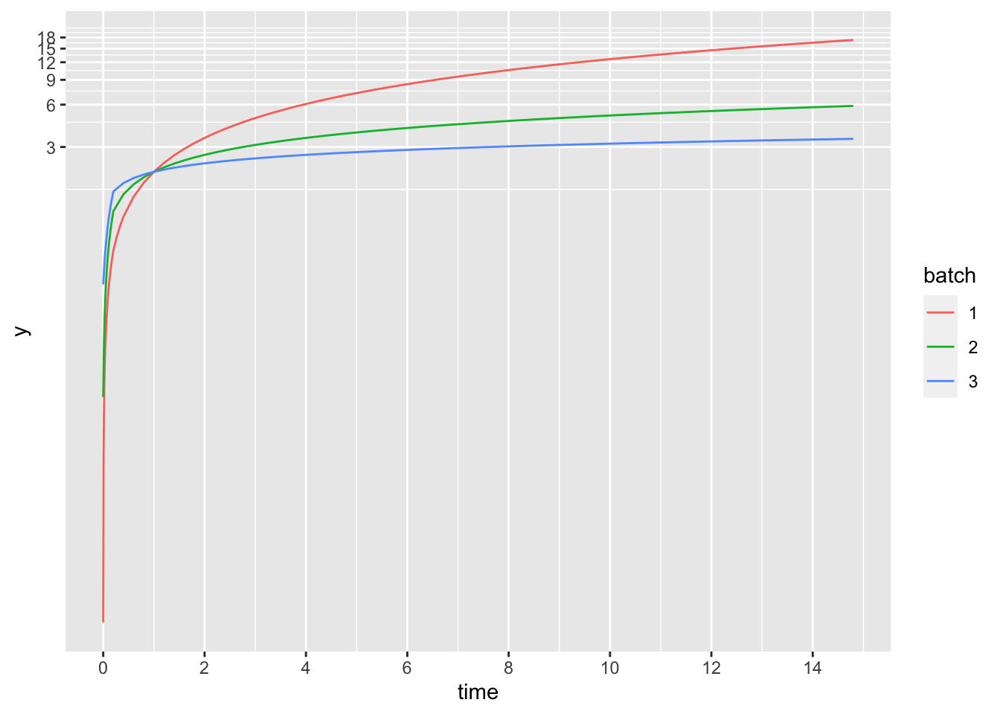
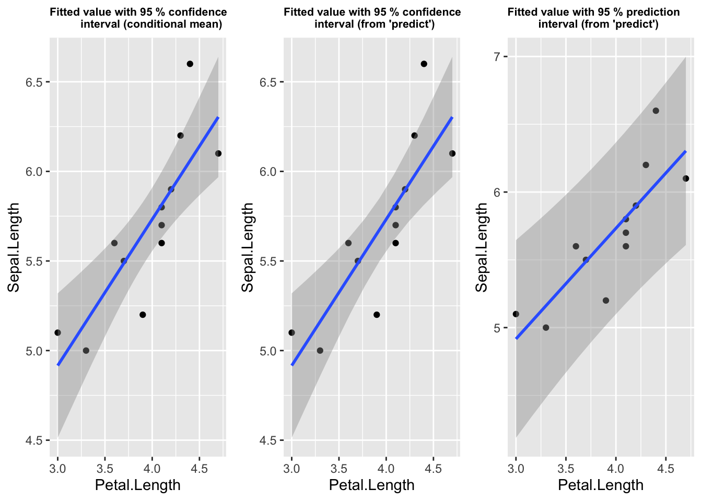
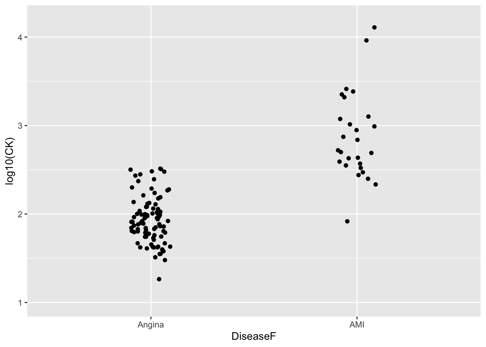

2 ggplot
2.2 Confidence bands
https://janhove.github.io/reporting/2017/05/12/visualising-models-2
2.3 Histogram
2.3.1 Histogram where data is in one vector of values
## Histogram of one vector of values in ggplot2
## Generate a vector of values
s2 <- numeric(5000)
for(i in 1:5000) {
dd <- rnorm(5, 10, 1)
s2[i] <- var(dd)
rm(dd)
}
summary(s2)## Min. 1st Qu. Median Mean 3rd Qu. Max.
## 0.008497 0.493848 0.844796 1.006063 1.362450 5.928726Data in numeric vector
## Data in numeric vector
ggplot() +
aes(s2) +
geom_histogram(binwidth = 0.5)
Data in single-column data frame - Y axis is frequency
## Data in single-column data frame
s2.df <- data.frame(var = s2)
## Y axis is frequency
ggplot(s2.df, aes(x = var)) +
geom_histogram(breaks = 0:16*0.5, col = "black",
fill = "grey70")Data in single-column data frame - Y axis is density
## Y axis is density
ggplot(s2.df, aes(x = var, y = ..density..)) +
geom_histogram(breaks = 0:16*0.5, col = "black",
fill = "grey70")
For comparison, histogram in lattice
## Lattice
histogram(s2, breaks = 0:16*0.5, right = F, main = "Lattice")range(s2)## [1] 0.008496687 5.9287261752.4 Density plot
## Density plot
ggplot(s2.df, aes(x = var)) +
geom_density()
For comparison, density plot in base graphics and in lattice
## Density plot - base graphics
plot(density(s2), main = "Base graphics")
## Density plot - lattice
densityplot(s2, plot.points = F, main = "Lattice")2.5 Plot structure
ggplot_build(p_obj)$data2.6 Label legend
guides(fill = guide_legend(title = "Gender"))2.7 Plot title
theme(plot.title = element_text(size = 11))2.8 Three-category colours
scale_fill_manual(values = c("#f8766d", "#00bfc4", "#b79f00")2.9 Set breaks for scale
scale_y_continuous(breaks = seq(0, 12, by = 2)) 2.10 Display table to 2 d.p.
mutate_if(is.numeric, ~ round(., 1)) %>%
kable()2.11 Redefine factor levels for an individual plot
nt_youth_all_indiv %>%
mutate(Race.nat = factor(
Race.nat,
levels = c("CALD", "Indigenous", "Caucasian", "Not recorded"))) %>%
group_by(Care_status, Race.nat) %>%
summarise(n_indiv = n_distinct(MP_id)) %>%
ggplot( etc. )